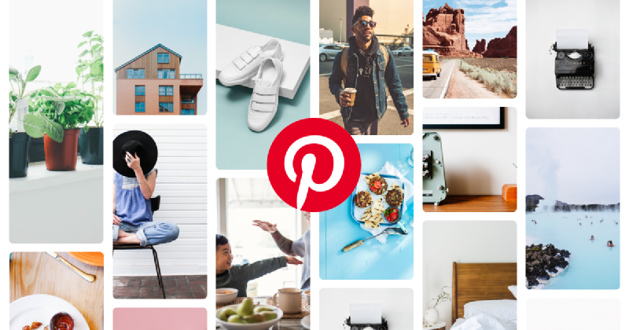
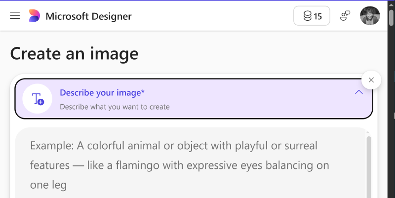
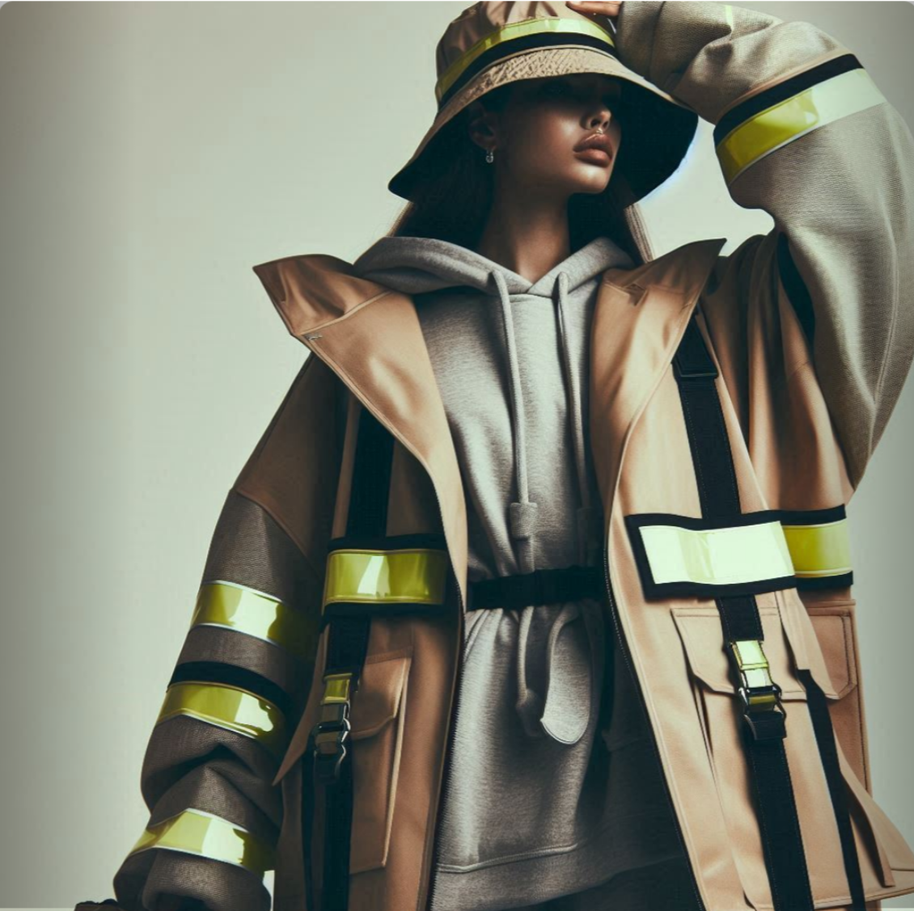
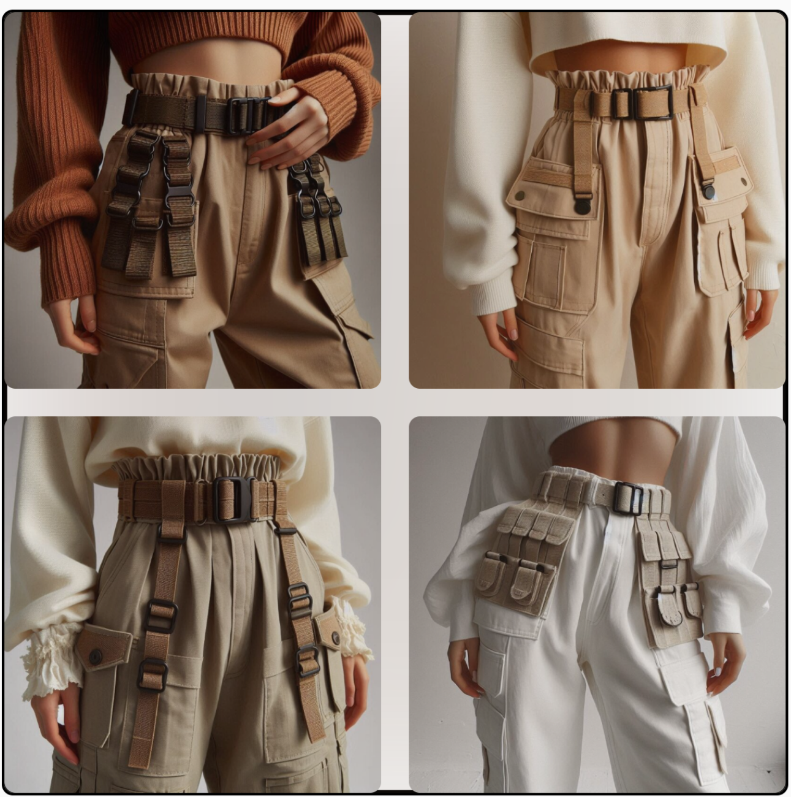
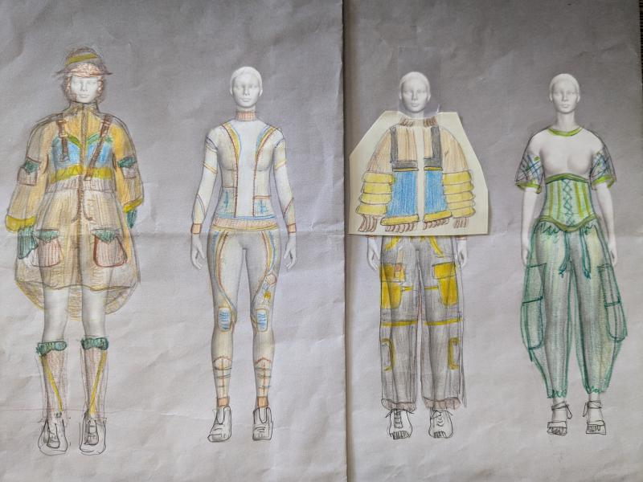

In this post, I’ll be breaking down how I translated my initial ideas into final design sketches using Pinterest, a visual search platform, and generative AI, specifically the text-to-image feature in Microsoft Designer. Together, these tools helped me both explore and clarify my aesthetic and generate design references far beyond what I could imagine on my own.
What is Design Vision & Realization in Fashion?
In simple terms, design vision is the big-picture story driving your designs. It’s what you want your collection to say and feel. This step involves gathering reference images, experimenting with silhouettes, drafting sketches and refining color palettes and details. Constructing your designs into garments is called design realization. This process includes pattern-making, fabric selection, construction techniques, fit adjustments, and so on.
You might have a clear vision in your head, but translating it into initial sketches and designs can feel overwhelming especially when first starting out. Here is where visual tools like Pinterest and AI text-to-image generators can help bring the ideas in your head onto paper.
Pinterest: A Visual Search Engine

Pinterest is far more than a social media platform—it’s a visual search engine. With over 570 million users worldwide, it’s a go-to resource for creative inspiration in food, home, and fashion. For designers, its visual-first search makes it easy to explore silhouettes, fabrics, and styling ideas.
👉 Stat to Know: Nearly, 70% of Pinterest users are women, making it highly aligned with fashion’s core demographics. (Source: Statista 2025)
What makes Pinterest exceptional for fashion designers is its algorithm’s ability to understand visual connections. Pin an image of a structured blazer, and the platform suggests related silhouettes, fabrics, and design details, creating a web of visual references that often leads to unexpected inspiration.
Key Pinterest Advantages for Fashion Design:
- 🔎Granular search capabilities: Search for specific elements like “asymmetrical hemlines” or “utilitarian details”
- ✨Algorithm-driven discovery: Related content suggestions expose you to references you wouldn’t have found otherwise
- 🗃️Visual organization: Project-specific boards keep inspiration organized and accessible
Enter Text-to-Image Generative AI: Your Creative Collaborator

While Pinterest helps you with discovery, generative AI lets you reimagine something new. Behind the hood, text-to-image models work by analyzing vast databases of existing images and learning to generate new visuals based on written descriptions. Meaning when you type a detailed description into tools like Midjourney, Stable Diffusion, and DALL·E 3 (which powers Microsoft Designer), it creates an image based on your prompt.
For fashion designers, this means describing a garment—“oversized navy firefighter coat with reflective trimming”—and instantly seeing multiple visual interpretations.
These AI tools excel at:
- Combining disparate ideas (e.g., Victorian tailoring + athletic wear)
- Quickly generating dozens of variations
- Visualizing fabrics, silhouettes, and styles without technical drawing
Traditional fashion illustration requires time and skill to produce each variation, but AI can generate dozens of concept images in minutes, allowing you to explore multiple directions rapidly.
As a student at the BKLYN Fashion Academy in 2024, I used Pinterest and Microsoft Designer’s text-to-image AI generator to develop a cohesive design vision for my Emergency Services-inspired collection. The AI images became my primary references when developing my final design sketches.
My Fashion Design Vision Process
From Pinterest Boards to AI Generated Images to Final Design Sketches
For my BKYLN Fashion Academy project, the theme was “Women of Future Industries,” with a focus on Emergency Services (EMS/FDNY). This presented an interesting challenge: how do you take the functional, protective nature of emergency services uniforms into contemporary fashion that still honors the original purpose and aesthetic?
Step 1: Building A Pinterest “Mood” Board
I started by creating a new Pinterest board specifically for my mini collection. My search strategy involved multiple keyword combinations to cast a wide net for inspiration:
- “Female firefighters” - to understand the actual uniforms and how they look on women
- “Amelia Earhart” - as a historical reference for women in traditionally male-dominated fields
- “Inverted pleats” - for specific construction details that could add movement and functionality
- “Reflective trimming fashion” - to see how safety elements could be incorporated stylistically
- “Utility workwear women” - for contemporary interpretations of functional clothing
After a few pins, Pinterest’s algorithm suggested related images like vintage aviation uniforms and modern tactical gear and even high-fashion interpretations of workwear—some of which I wouldn’t have thought to search for. Pinterest also provides search suggestions both within its search feature and as cards on your feed, this inspired keywords that I would later use in Microsoft Designer’s text-to-image AI prompts.
Step 2: Generating Ideas Using AI
How to Use Microsoft Designer’s Text-to-Image:
-
Access the Tool: Go to Microsoft Designer on your browser or via the app and select Image Creator.
-
Craft Your Prompt: Write a detailed description of your envisioned garment or look.
One of the neat things about Microsoft Designer is that it showcases several examples of generated images and the prompts that created them. If you are new to these tools, I recommend reading through a couple and trying some of them out to get a feel for how it works.👉Tip: You can use ChatGPT, ClaudeAI or others like it and ask it to improve or develop your text prompt if wordsmithing isn’t your forte.
-
Generate Multiple Variations at Once: Once you have your prompt ready, select ‘Create’ and Microsoft Designer will return several (~3-4) variations per prompt. *Note you get 15 free credits a month.
-
Refine and Iterate: Use the generated images as starting points for more specific follow-up prompts.
Step 3: Sketching the Designs (Concept Development)
I pinned my favorite AI images back to Pinterest and continued refining my mood board. Then I culled my pins and notes, picking color palettes, silhouettes, and functional details I wanted to carry forward.
From there, I created my initial design sketches and final lineup. Pinterest provided the visual vocabulary and understanding of existing solutions while AI enabled rapid exploration of new combinations and iterations.
Below are some pins both discovered on Pinterest and AI generated that served as references and inspired my final designs.
Look 1: Turnout Jacket Dress
Look 2: Exo-Performance Suit
Look 3: Bomber Jacket & Joggers
How to Write Strong Fashion AI Prompts
The magic of AI text-to-image generation is in the prompt. Clear, detailed descriptions tend to give you better results.
👉Tip: Try Adobe Firefly using the same prompt and see how the generated images differ and choose the platform that gives you the better results or tweak your prompt.
Key Elements for Good AI Prompts:
- Subject: women’s, men’s, unisex
- Style/Vibe: photorealistic, high detail, futuristic, minimalist, romantic, etc.
- Presentation: full body, front and back view, fashion pose, lineup, fashion illustration or technical drawing
- Garment Specifications:
- Type: cargo pants, jumpsuit, blazer, workwear
- Details: reflective trims, utility straps, structured shoulders
- Colors: navy, dark red, neutral tones
- Materials: breathable fabric, fire-resistant, lightweight
Example Prompts and Images Generated

full body length view, women’s fashion pose arms overhead holding bucket hat/helmet in an large coat with reflective trimming, highly detailed

women’s high waisted loose pants waist band with utility Velcro loops as embellishments
The Synergy Between Pinterest and AI
The combination of Pinterest’s discovery capabilities and AI’s generative ideations created a design process that was both comprehensive and efficient. Pinterest helped me understand what already existed in the emergency services and fashion worlds, while AI helped me envision what could exist by combining these elements in new ways.
Through this Pinterest and AI-driven approach, I discovered several key insights. Most significantly, AI allowed for rapid iteration and refinement that would have been impossible with traditional sketching—I could generate dozens of concept images in a single afternoon, exploring far more directions than manual methods would allow. The AI’s interpretation of my prompts often led to unexpected visual solutions, such as when I described “utility workwear elements” and discovered how straps and loops could become decorative rather than purely functional elements.
Seeing my concepts rendered in photorealistic detail provided invaluable insights into how proportions would work in reality and how different color combinations affected the overall impact of the designs. The AI’s interpretation of technical elements like “reflective trimming” and “breathable materials” gave me visual inspiration for aesthetically integrating functional requirements into fashion-forward designs, helping me visualize concepts I couldn’t have articulated through traditional sketching alone.
Practical Tips for Fashion Designers
Based on my experience, here are practical recommendations for incorporating these tools into your design process:
Pinterest Strategy:
- Create project-specific boards to keep your inspiration organized
- Use multiple search terms to cast a wide net for inspiration
- Pin reference images and detail shots to capture both overall concepts and specific construction techniques
- Follow the algorithm’s suggestions - Pinterest’s related content feature often leads to unexpected inspiration
AI Prompting Best Practices:
- Be extremely specific about what you want to see
- Include technical fashion terminology to get more accurate results
- Specify presentation style (photorealistic, fashion pose, etc.)
- Generate multiple variations before moving to the next concept
- Use generated images as starting points for more refined prompts
Integration Workflow:
- Start with Pinterest research to understand existing visual language
- Use AI to generate original concepts based on your research insights
- Return to Pinterest to research specific details revealed in your AI images
- Iterate between both platforms to refine your vision
Final Thoughts
For fashion designers looking to expand their creative process, I recommend starting with clear project goals and being willing to experiment with both platforms. The learning curve is manageable, and the creative possibilities are genuinely exciting. Most importantly, these tools won’t replace your creativity or technical skills—but they will amplify them.
The intersection of visual discovery and AI generation offers fashion designers an unprecedented idea-generating opportunity. The ability to rapidly visualize concepts, explore variations, and communicate ideas visually will accelerate the design process and potentially lead to more innovative designs. By embracing these technologies thoughtfully, we can create designs that are both culturally relevant and genuinely forward-thinking.

💬 Have you tried using AI in your creative process yet? What tools or techniques do you love? Drop a comment below!
↥ Back to Top